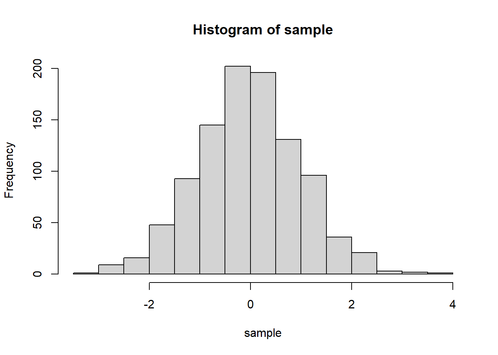

연속확률분포에서 특정한 지점에서의 확률은 수학적으로 생각하면 선의 넓이이므로 0이다. 그런데 dnorm에서 구하는 값은 0이 나오지 않는데, 이는 아주 작은 크기의 직사각형을 만들어 면적을 계산하여 도출한다고 생각하면 된다. 직관적으로 그 점에서의 높이를 계산한다고 생각하면 된다.
* 그림 출처: 통계교육원, R을 활용한 통계분석
# 정규분포에서 1000개의 난수를 뽑아 표본을 만든 후, 히스토그램 그려보기sample =rnorm(1000, mean =0, sd =1)hist(sample)

# curve함수를 이용해서 정규분포의 확률밀도함수 그리기mean <-0sd <-1curve(dnorm(x, mean, sd), from =-4, to =4, xlab ="x", ylab ="Density",main ="Normal Distribution Density (mean=0, sd=1)", col ="blue")
# 정규분포의 누적분포함수 그리기mean <-0sd <-1curve(pnorm(x, mean, sd), from =-4, to =4, xlab ="x", ylab ="Cumulative Probability",main ="Normal Distribution CDF (mean=0, sd=1)", col ="red")
정규분포의 확률 구하기
\(P(Z<-0.155\) 또는 \(Z>1.6)\)를 구하여라.
# pnorm함수는 정규분포의 확률값을 구해주는 함수이다. # pnorm(x, mean=a, sd=b)의 형태로 입력되며, # 뒤의 mean, sd 항목을 생략하면 mean=0, sd=1의 표준정규분포의 확률값을 구하는 것으로 인식하게 된다.pnorm(-0.1555)+1-pnorm(1.6)
[1] 0.4930129
\(P(-z≤Z≤z)=0.95\)를 만족시키는 양의 실수 \(z\)를 구하여라.
# qnorm함수는 확률값을 입력하였을때, 그에 해당하는 표준정규분포를 따르는 변수 Z값을 구해주는 함수이다.qnorm(0.025)
[1] -1.959964
어느 저울의 성질을 알아보기 위하여 질량이 1kg인 추를 반복적으로 잰다고 하자. 이때 측정된 질량은 평균이 1kg이고, 표준편차가 20g인 정규분포를 따른다고 한다. 이러한 측정을 계속 반복할 때, 측정된 값이 1kg으로부터 10g 이내에 있는 비율은 얼마인가?
모평균을 추정하는 내용을 배울 때, 모집단이 정규분포임을 가정하고, 표본평균의 분포를 살펴보기 때문에 이때 필요함.
정규분포를 따르는지 알아보는 방법
히스토그램을 그려 좌우대칭인지 확인함.
정규확률그림(normal probability plot)을 그려서 확인함. 정규확률그림이란 정규분포의 분위수와 표본자료의 분위수를 각각 가로축과 세로축으로 두고 그림을 그린 것임. 직선으로 증가하는 형태이면 정규분포를 따른다고 판단함. 히스토그램과 정규확률그림은 시각적으로 판단하여 사람에 따라 다르게 판단할 수 있음.
통계적 가설검정을 통해 판단하는 방법이 있으며, 이 방법이 객관적이고 과학적인 방법임. 이 내용은 카이제곱검정에서 배울 것임.
정규확률그림으로 확인하는 방법
어떤 자료가 정규분포에 얼마나 근접한지 알고 싶으면 Q-Q(Quantile-Quantile) plot을 그려본다. Q-Q plot에서 직선은 정확한 정규분포 수식에서 나오는 값인데, 관찰값인 점들이 직선에서 크게 벗어나지 않으면 자료가 정규분포를 따른다고 할 수 있다.
body <-read.table("BodyWeight.txt", header=T)qqnorm(body$몸무게)qqline(body$몸무게, col="blue")
직선에 어느 정도 근접하느냐는 주관적이므로, 위 자료(100개)와 비교해보기 위해 정규분포를 이루는 난수를 발생하여 같은 그래프를 그려보자.
x =rnorm(n=100, mean=0, sd=1) #평균이 0이고, 표준편차가 1인 표준정규분포에서 100개의 난수를 발생하여 x에 넣기qqnorm(x)qqline(x, col="blue")